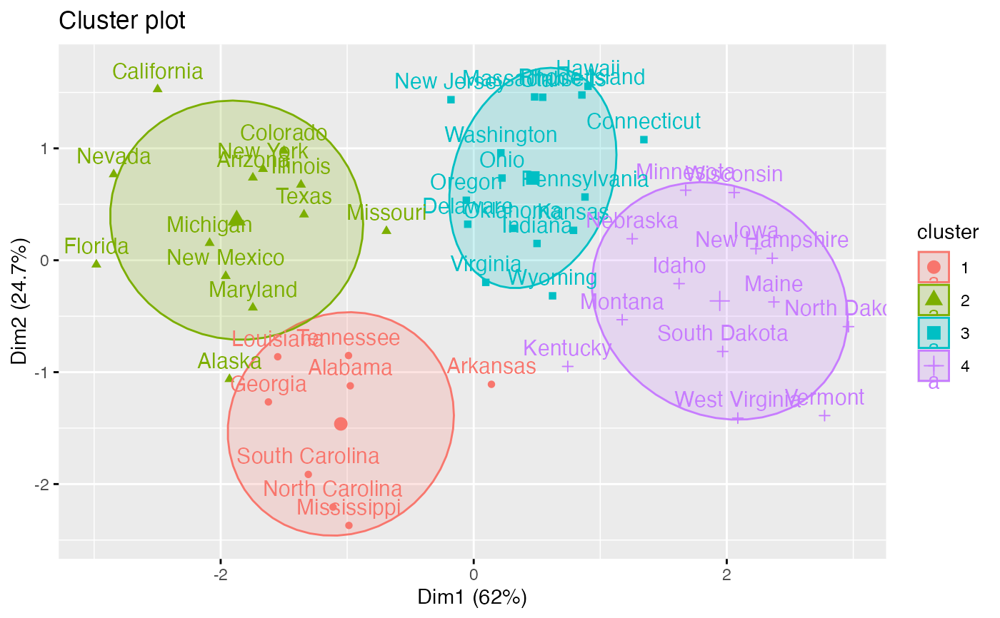
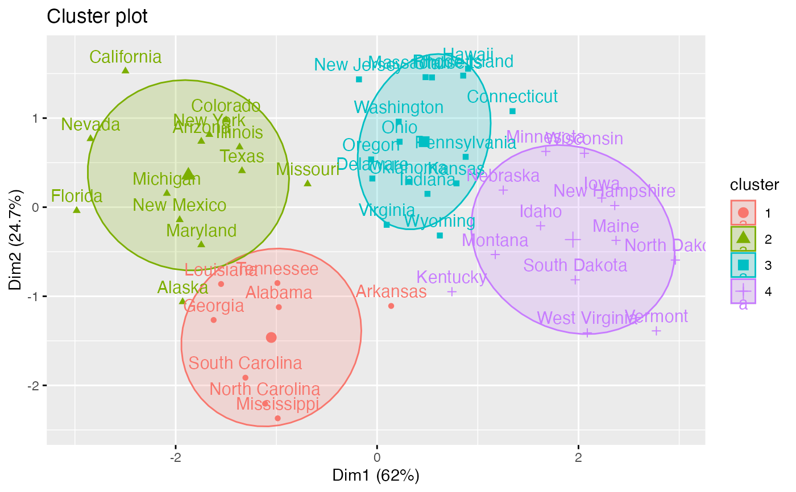

The final k-means clustering solution is very sensitive to the initial random selection of cluster centers. This function provides a solution using an hybrid approach by combining the hierarchical clustering and the k-means methods. The procedure is explained in "Details" section. Read more: Hybrid hierarchical k-means clustering for optimizing clustering outputs.
hkmeans(): compute hierarchical k-means clustering
print.hkmeans(): prints the result of hkmeans
hkmeans_tree(): plots the initial dendrogram
Usage
hkmeans(
x,
k,
hc.metric = "euclidean",
hc.method = "ward.D2",
iter.max = 10,
km.algorithm = "Hartigan-Wong"
)
# S3 method for class 'hkmeans'
print(x, ...)
hkmeans_tree(hkmeans, rect.col = NULL, ...)Arguments
- x
a numeric matrix, data frame or vector
- k
the number of clusters to be generated
- hc.metric
the distance measure to be used. Possible values are "euclidean", "maximum", "manhattan", "canberra", "binary" or "minkowski" (see ?dist).
- hc.method
the agglomeration method to be used. Possible values include "ward.D", "ward.D2", "single", "complete", "average", "mcquitty", "median"or "centroid" (see ?hclust).
- iter.max
the maximum number of iterations allowed for k-means.
- km.algorithm
the algorithm to be used for kmeans (see ?kmeans).
- ...
others arguments to be passed to the function plot.hclust(); (see ? plot.hclust)
- hkmeans
an object of class hkmeans (returned by the function hkmeans())
- rect.col
Vector with border colors for the rectangles around clusters in dendrogram
Value
hkmeans returns an object of class "hkmeans" containing the following components:
The elements returned by the standard function kmeans() (see ?kmeans)
data: the data used for the analysis
hclust: an object of class "hclust" generated by the function hclust()
Details
The procedure is as follow:
1. Compute hierarchical clustering
2. Cut the tree in k-clusters
3. compute the center (i.e the mean) of each cluster
4. Do k-means by using the set of cluster centers (defined in step 3) as the initial cluster centers. Optimize the clustering.
This means that the final optimized partitioning obtained at step 4 might be different from the initial partitioning obtained at step 2.
Consider mainly the result displayed by fviz_cluster().
Examples
# \donttest{
# Load data
data(USArrests)
# Scale the data
df <- scale(USArrests)
# Compute hierarchical k-means clustering
res.hk <-hkmeans(df, 4)
# Elements returned by hkmeans()
names(res.hk)
#> [1] "cluster" "centers" "totss" "withinss" "tot.withinss"
#> [6] "betweenss" "size" "iter" "ifault" "data"
#> [11] "hclust"
# Print the results
res.hk
#> Hierarchical K-means clustering with 4 clusters of sizes 8, 13, 16, 13
#>
#> Cluster means:
#> Murder Assault UrbanPop Rape
#> 1 1.4118898 0.8743346 -0.8145211 0.01927104
#> 2 0.6950701 1.0394414 0.7226370 1.27693964
#> 3 -0.4894375 -0.3826001 0.5758298 -0.26165379
#> 4 -0.9615407 -1.1066010 -0.9301069 -0.96676331
#>
#> Clustering vector:
#> Alabama Alaska Arizona Arkansas California
#> 1 2 2 1 2
#> Colorado Connecticut Delaware Florida Georgia
#> 2 3 3 2 1
#> Hawaii Idaho Illinois Indiana Iowa
#> 3 4 2 3 4
#> Kansas Kentucky Louisiana Maine Maryland
#> 3 4 1 4 2
#> Massachusetts Michigan Minnesota Mississippi Missouri
#> 3 2 4 1 2
#> Montana Nebraska Nevada New Hampshire New Jersey
#> 4 4 2 4 3
#> New Mexico New York North Carolina North Dakota Ohio
#> 2 2 1 4 3
#> Oklahoma Oregon Pennsylvania Rhode Island South Carolina
#> 3 3 3 3 1
#> South Dakota Tennessee Texas Utah Vermont
#> 4 1 2 3 4
#> Virginia Washington West Virginia Wisconsin Wyoming
#> 3 3 4 4 3
#>
#> Within cluster sum of squares by cluster:
#> [1] 8.316061 19.922437 16.212213 11.952463
#> (between_SS / total_SS = 71.2 %)
#>
#> Available components:
#>
#> [1] "cluster" "centers" "totss" "withinss" "tot.withinss"
#> [6] "betweenss" "size" "iter" "ifault" "data"
#> [11] "hclust"
# Visualize the tree
hkmeans_tree(res.hk, cex = 0.6)
 # or use this
fviz_dend(res.hk, cex = 0.6)
# or use this
fviz_dend(res.hk, cex = 0.6)
 # Visualize the hkmeans final clusters
fviz_cluster(res.hk, frame.type = "norm", frame.level = 0.68)

# }
# Visualize the hkmeans final clusters
fviz_cluster(res.hk, frame.type = "norm", frame.level = 0.68)

# }